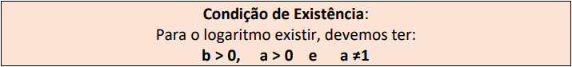
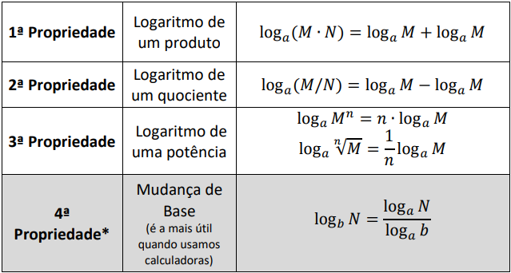
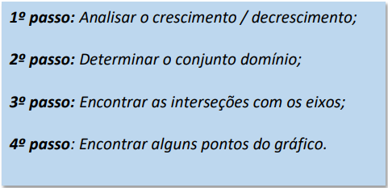

| INÍCIO | 2º TRIMESTRE |
|---|
Logaritmo é um conteúdo que usa, com principal operação a exponenciação, Sabemos que 2^3 = 8, isso significa que log2 8 = 3. Lê: log de 8 na base 2 é igual a 3.
Ou seja, a resposta de um logaritmo sempre será um expoente
Dados os números reais a e b, com a ≠ 1, se b = ac , então o expoente c chama-se logaritmo de b na base a.
Sobre os logaritmos temos algumas conclusões:
1) O logaritmo pode se transformar numa equação exponencial.
2) Logaritmando não pode ser zero nem número negativo.
3) A base não pode ser zero, nem 1, nem negativa.
4) Para o cálculo de alguns logaritmos, a transformação em equação exponencial não ajuda, então usaremos outros métodos.
Também temos algumas propriedades operatórias:
O gráfico de uma função logarítmica pode ser construído a partir da atribuição de valores a x na qual encontramos seus pares ordenados y.
Temos 4 passos para construir o gráfico
Voltar